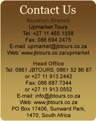

| |
|
| |
 |
| |
|
| |
 |
| |
|
| |
 |
| |
|
| |
|
| |
|
|
|
Dear
Subscriber
MAY/MEI 2010 - NEWSLETTER / NUUSBRIEF
Comfortable, Affordable, Safe, Secure & Enjoyable Train Tours – in Southern Africa
EXTRA TRAIN TOUR to KRUGER PARK (from Cape Town)
All three our scheduled train tours for 2010 from Cape Town to the Kruger National Park (KNP) in Mpumalanga are fully booked. The good news is that we’ve obtained more space inside the KNP to host a fourth train tour. It will be hosted from 20th to 30th October 2010 and will include again 3 nights stay in the KNP as well as visits to the Lowveld’s natural wonders. The tour price remains unchanged and accommodation is in good lodges and hotels. Travelling off the train is in a luxury air-connditioned bus. R4600 pp More info
There is a bus tour available as well during the same period, starting in Johannesburg, at a reduced price. More info
| SPECIAL OFFER on NAMIBIA TRAIN TOUR |
Pay only 50% for the second passenger. More info on special offer
2010 VODACOM DURBAN JULY – travel in Style by Premier Classe train
Unrivalled as Africa's greatest sporting and social event, 31 July 2010 will again attract more than 50 000 of the country's bold, brash and beautiful to Greyville Racecourse in Durban for the R3 million Vodacom Durban July horse race.
JB Train Tours is organizing a stylish weekend train tour package from Friday, 30th July till Monday 2nd August 2010 to this prestige event.
Included in the 4-day train tour package:
- Return train trip from JHB to DBN on the luxurious Premier Classe train
- All meals (5-course dinner, breakfast, coffee & tea) and bedding on the train
- One night’s B&B in a 3-star hotel
- Transport between Durban train station, hotel and Greyville Racecourse
- Tour guide (if more than 10 passengers)
- Entry ticket to Vodacom Durban July 2010 Event
Only R3 699pp sharing
Enquire today with Jolene at jolene@jbtours.co.za or read more here
Please note that the ‘July’ is this year hosted a month later than normal, due to the Soccer World Cup in South Africa. |
|
| |
| NAMAKWALAND BLOMME-TREINTOERE WEER BAIE GEWILD |
Die Namakwalandse Blomme in seisoentyd is ‘n natuurwonder. Vele mense verlustig en verkyk hul elke jaar vanaf so vroeg as Juniemaand aan hierdie natuurverskynsel. Die blomme, omgewing, klein dorpies en pragtige natuur in die Weste van ons land is iets wat ‘n mens ten minste een keer in jou lewe MOET sien. Talle van ons passasiers ry dikwels vir ‘n 2de, 3de en selfs 4de keer saam op ons treintoere om weer te gaan blomme kyk. Dit lyk elke jaar anders.
Ons bied vanjaar weer 12 sakpas-treintoere vanaf Pretoria/Johannesburg Meer inligting na Namakwland toe aan (3 van hierdie toere is reeds vol bespreek en nog 2 toere het net een plek elk beskikbaar!), asook 6 treintoere vanuit Durban Meer inligting. 2 Van die DBN treintoere is bykans vol bespreek. Hierdie toere vind in Augustus en September 2010 plaas.
Vir diegene wat bietjie meer luuks wil reis, word daar ook twee toere in Augustus op die Premier Classe trein vanaf Pretoria/Johannesburg na die Blomme aangebied. Meer inligting Ons bied ook ‘n Motorfiets-op-Treintoer na die Blomme toe in September 2010 aan. Dis ‘n unieke eerste toer. Meer inligting |
|
| |
|
| Visit NAMAQUALAND FLOWERS with the STYLISH PREMIERCLASSE train |
JB Train Tours invite you to join us on our inaugural upmarket Premier Classe train tour to the beautiful Namaqualand on the South African west coast. It is at the end of the rainy season and the flowers will be in its splendid beauty. There is nothing else like this natural phenomenon.
2 dates available in 2010:
- 15 – 22 August
- 22 – 29 August
Included in the 8-day train tour package:
- Return train trip from Jo’burg to Cape Town on the luxurious Premier Classe train
- Accommodation in reputable hotels or lodges
- 2 Meals per day
- Bus transport
- Tour guide
- Excursions as mentioned in the itinerary
R8 300 pp sharing More info |
|
| |
| DID YOU KNOW? |
- Bookings for the train tour from Jo’burg to the 2011 Argus Cycle race in Cape Town in March next year has opened. 6 Day | 5 Day
- Most people don't realize how much passion they put into what they don't want. When you speak to a friend and you tell them all about an "awful" situation, you areputting passion into what you don't want. When you react to an event negatively, with the response that it is "terrible", you are putting passion into what you don't want. Rhonda Byrne. The Secret... bringing joy to billions
- Bookings on the Cherry Festival bus tours from PTA & Jo’burg to Ficksburg in November has opened
- That ‘Go’ magazine (‘Weg’ tydskrif in Afrikaans) printed a Special edition (132 pages) on Namibia in April 2010. It is still on the shelves in all retail supermarkets and magazine shops. It is a ‘must read’ if you are going to visit this beautiful neighbouring country in the nearby future.
- The much expected Gautrain (new metro based train between OR Tambo Airport – Sandton – Jo’burg & Pretoria) is due to start operating on the 8th June 2010. Once operational to Jo’burg station, we’ll include a trip on this train when hosting our 7 Provinces train tours.
|
|
| |
| HET U GEWEET? |
- ‘n Berig in ‘n onlangse Sondagkoerant het twee ou vriende na jare weer toevalllig bymekaar laat uitkom. Mnr. Connie Conradie van Mafikeng se naam en telefoonnommer het (foutiewelik) in ‘n artikel oor JB Train Tours verskyn. Toe Connie ons bel om te laat weet dat hy talle oproepe namens ons maatskappy ontvang, is daar vasgestel dat hy & ons Johan Badenhorst ou vriende is - nadat hulle 13 jaar gelede kontak verloor het.
- Dat daar in Nieuwoudville in die Noord Kaap ‘n egpaar is wat ‘n persoonlike oudhede versameling het. Dit sluit o.a. 140 veteraan motorfietse in, asook 30 ou motors, telefone, vlae, speelgoed en vele meer. Ons maak vanaf vanjaar ‘n draai daar wanneer ons op die Namakwalandse Blommetoere is.
|
|
| |
| SMILE: EXTRACTS from INSURANCE CLAIMS |
"I started to slow down but the traffic was more stationary than I thought."
"I pulled into a lay-by with smoke coming from under the bonnet. I realised the car was on fire so took my dog and smothered it with a blanket."
A farmer collided with a cow. The questions and answers on the claim form were:
Q: What warning was given by you? A: Horn
Q: What warning was given by the other party? A: Moo
"I didn't think the speed limit applied after midnight."
"The car in front hit the pedestrian but he got up so I hit him again."
"I pulled away from the side of the road, glanced at my mother-in-law and headed over the embankment."
"The other car collided with mine without giving warning of its intention." |
|
| |
| NAMIBIA in May 2010 |
We’ll be hosting only two train tours from Jo’burg to Namibia during 2010, compared to the 5 tours we did in 2009. This is mainly due to the unavailability of the train set due to the Soccer World Cup to be hosted in South Africa this year.
Namibia had exceptionally good rain during the summer and the veldt is lush and green. Even the desert looks different compared to other seasons.
Both tours are again 10 days long and are scheduled for 19 – 28 May (fully booked) & 31 May to 9 June 2010. More info on the special offer on this tour.
 Spitzkoppe
Spitzkoppe |
 Albatros at Walvis Bay
Albatros at Walvis Bay |
|
|
| |
| MINITURE TRAINS in DURBAN |
Durban Society of Model Engineers operates their miniature live steam trains for the public on the second Sunday of each month at Kellaway Park, Hinton Grove, VIRGINIA, Durban. It is open to the public with no free entry. Children can enjoy a trip on these miniature model trains. For details, contact John Coombe on 031-572 6984.
|
|
|
| FEEDBACK on TOURS – April 2010 |
Budget Tours:
KKNK: Jo’burg na Oudtshoorn Twee treintoere na die Klein Karoo Nasionale Kunstefees toe & die Fees het weer sy naam gestand gedoen. Dit was lekker, opwindend en vol ‘aksie’.
KKNK: Durban na Oudtshoorn Nog een van ons nuwe treintoere, met die KZNatallers wat ook gaan saam fees hou het.
Cape Town Holiday: Durban to Cape Town A small group of people exchanged the KZN beach for the Atlantic Ocean & Western Cape sight seeing spots.
Motorfiets-op-Trein Toer: Jo’burg na Kaapstad (Wes Kaap & Boland) ‘n Lekker toer met so ‘n reënbui of twee wat die ‘bikers’ na ‘n droë Gauteng laat verlang het.
Durban & KZN: Jo’burg to Durban The visitors from Gauteng enjoyed the KZN beaches, good weather & accommodation at Natalia Holiday Resort in Illovo Beach.
Motorbike-on-Train Tour: Jo’burg to Garden Route (New tour) This inaugural tour is currently in progress in the Eastern & Southern Cape.
Cape Town Holiday: Jo’burg to Cape Town A good time to be in the Western Cape. The weather was good and the last grapes very sweet.
Cape Town Jazz festival: Jo’burg to Cape Town Like always, a winner! The music, the people, the city, the hotel accommodation and the train tour – all went well. The disco van on the train was severely missed… Next year this tour will be hosted again. BIGGER!
Upmarket Tours :
KKNK: Kaapstad na Oudtshoorn Die Kapenaars het die toer met oorgawe geniet. ‘Net jammer dit was so kort’ was die algemene terugvoer. Dit blyk ook asof ons meer slaapplek vir 2011 sal moet bespreek.
Oudtshoorn Re-discovery: Cape Town to Oudtshoorn Hierdie nuwe ‘upmarket’ treintoer uit die Kaap groei in gewildheid. Nuwe plekke in die Klein Karoo en in die Swartberge word ontdek.
Cape Town Stylish week: Jo’burg to Cape Town An elderly couple went on this stylish train tour to celebrate the hubbie’s 80th birthday
Durban stylish weekend: Jo’burg to Durban Passengers traveled to Durban for Easter weekend where they enjoyed the good sunny weather (Gauteng was wet!).
Motorbike-on-Train Tour: Jo’burg to Cape Town (Western Cape & Boland) It was the first group of bikers that went on the Premier Classe train. It fitted in well with the Tourist Class train tour.

Oudtshoorn Re-discovery train tour passengers with tour guides
|
|
| |
| UPCOMING TRAIN TOURS in 2010 |
May 2010 TRAIN TOURS
Budget Tours:
Garden Route: Jo’burg to PE to Worcester Visit Tsitsikama, Plet, Knysna, George, Oudtshoorn, Swellendam & Montagu and . 18 – 25 May 2010. R5800 pp More info
Kruger National Park: Cape Town to KNP & Lowveld Sleep 3 nights IN the KNP and visit the popular tourist destinations in the Lowveld. I.e.: Pilgrims Rest, Bourke’s Potholes, Blyde River canyon, etc. 8 – 13 May 2010. (Only 1 space available to with a male) R6400 pp More info
7 Provinces & 3 Trains: Circular route through South Africa If you like and love traveling by train, this is your tour. Join any place en route and disembark again at the same station 8 days later. 6 – 18 May 2010. R3990 pp More info
Superbike at Kyalami: Cape Town to Jo’burg See the BIG Bikes in action. Go by train, attend all 3 days at the track and fly back on the Sunday. 12 – 16 May 2010. R5100 pp More info
Super 14 Rugby at Newlands: Jo’burg to Cape Town Final round of the 2010 Super 14 series. Go by train, attend the game, have fun and be back in PTA on Monday afternoon. 14 – 17 May 2010. R2200 pp More info
Comrades marathon Bus: Jo’burg to Durban We take you to Durban for registration and to the Expo, as well as to the start in PMB. Sleep two nights in a hotel. 29 – 31 May 2010. R1690 pp More info
Upmarket Tours :
Namibië: Jo’burg na Namibië (#1) & Namibië na Jo’burg (#2) Besoek die Etosha panne en Wildtuin, Visrivier Rafyn, Swakopmund, Windhoek en vele meer. 19 tot 28 Mei (Vol bespreek) & 31 Mei tot 9 Junie 2010 (Nog plek beskikbaar). R14990 pp Meer inligting oor spesiale toerprys aanbod
Oudtshoorn Re-discovery: Cape Town to Oudtshoorn Re-discover Oudtshoorn and the ‘Klein Karoo’ by Premier Classe train and stay in a beautiful lodge at the foot of the Swartberg Mountain range. 14 – 17 May 2010. R3995 More info
Cape Town Stylish week: Jo’burg to Cape Town Visit the Mother City by traveling on a return trip on the Premier Classe train & staying in a 4-star hotel. 23 – 30 May 2010. R10400 pp More info
Durban stylish weekend: Jo’burg to Durban Departs Thursday evening from JHB and arrive Monday morning back. Return trip on the Premier Classe train and one night in a hotel in the Holiday City. 28 – 31 May 2010 (Long weekend). R2995 pp More info
Super 14 Rugby at ABSA Park, Durban: Jo’burg to Durban Departs Friday evening from JHB and arrive Monday morning back. Return trip on the Premier Classe train and one night in a hotel in the Holiday City. 7 – 10 May 2010. Fully booked
Note # 1: In June & up to mid July 2010 we won’t be hosting ANY train tours due to unavailability of trains during the Soccer World Cup hosted during that period in South Africa.
July 2010 TRAIN TOURS
Budget Tours:
Namaqualand Flowers: Durban & Free Sate to Namaqualand Enjoy the beauty of God’s garden. A multiscope of flowers, plants, valleys, planes and small towns, with lots of friendly people.30th July – 6th Aug 2010 departing on a Friday. R5900 pp More info
Kruger National Park: Cape Town to KNP & Lowveld Sleep 3 nights IN the KNP and visit the popular tourist destinations in the Lowveld. I.e.: Pilgrims Rest, Bourke’s Potholes, Blyde River canyon, etc. 30th July – 7th Aug 2010. R6400 pp Fully booked
7 Provinces & 3 Trains: Circular route through South Africa If you like and love traveling by train, this is your tour. Join any place en route and disembark again at the same station 8 days later. 15 – 27 July 2010. R3990 pp More info
Cape Town Holiday: Jo’burg to Cape Town Go and visit the Mother City & enjoy Table Mountain, Robben Island, cape Point, the Castle, V&A waterfront and much more. 18 – 24 July 2010. R3850 pp More info
Upmarket Tours:
Durban stylish weekend: Jo’burg to Durban Departs Friday evening from JHB and arrive Monday morning back. Return trip on the Premier Classe train and one night in a hotel in the Holiday City. 30th July – 2nd Aug 2010. R3529 pp More info
Cape Town Stylish weekend: Jo’burg to Cape Town Visit the Mother City by traveling on a return trip on the Premier Classe train & staying in a 4-star hotel. 22 – 25 July 2010. R5700 pp. More info
August 2010 TRAIN TOURS
Budget Tours:
Namaqualand Flowers: Jo’burg to Namaqualand Enjoy the beauty of God’s garden. A multiscope of flowers, plants, valleys, planes and small towns, with lots of friendly people. 8 x 7-day tours hosted in this month, departing on either a Sunday or Wednesday. R5100 pp 5 Tours already fully booked More info
Namaqualand Flowers: Durban & Free Sate to Namaqualand Enjoy the beauty of God’s garden. A multiscope of flowers, plants, valleys, planes and small towns, with lots of friendly people. 4 x 8-day tours hosted in this month, departing on a Friday. R5900 pp 2 Tours already fully booked More info
Upmarket Tours:
Oudtshoorn Re-discovery: Cape Town to Oudtshoorn Re-discover Oudtshoorn and the ‘Klein Karoo’ by Premier Classe train and stay in a beautiful lodge at the foot of the Swartberg Mountain range. 14 – 17 May 2010. R3995 More info
Cape Town Stylish week: Jo’burg to Cape Town Visit the Mother City by traveling on a return trip on the Premier Classe train & staying in a 4-star hotel. 23 – 30 May 2010. R10400 pp More info
Namaqualand Flowers: Jo’burg to CPT to West Coast Departs Sunday afternoon from JHB and arrive next Sunday morning back. Return trip on the Premier Classe train and accommodation in 2 hotels. Two tours: 15th – 22nd & 22nd – 29th Aug 2010. R8300 pp More info
|
|
| |
| DAY TRAIN TRIPS |
There are only two companies in Gauteng hosting day trips by train. This is ideal for families, companies, churches, clubs, etc. and especially for children who have never been on a train trip. Both these companies haul the train with a steam locomotive engine!
Pretoria area: Friends of the Rail Contact Mr. Arno Victor at Tel: 082 293 4616 or sales@friendsoftherail.com or visit their website athttp://www.friendsoftherail.com They travel mostly from Pretoria to Cullinan & Bela Bela..
Johannesburg area: Reef Steamers Contact Mr. Les Smith at Tel: 011 956-6409 or bookings@reefsteamers.co.za or visit their website athttp://www.reefsteamers.co.za They travel mostly from Maraisburg to Magaliesburg.
KZN (Durban & PMB) area: Umgeni Steam Rail Contact Mr. Rob McGregor at Tel: 031 303 3003 or robbie@umgenisteamrailway.co.za or visit their website athttp://www.umgenisteamrailway.co.za/. They travel mostly from Inchanga, Kloof & PMB.
Note: Don’t change/cancel your holiday – change your way of going on holiday! Travel with JB Train Tours. It is Comfortable, Affordable, Safe & Secure |
|
| |
| 2010 YEAR PROGRAMME |
| Click Here
Regards/Groete
Johan Badenhorst
& the Team
JB Train Tours (Since 1975)
P.S. We host train tours to various destinations, sporting events and occasions in Southern Africa |
|
| |
|
|